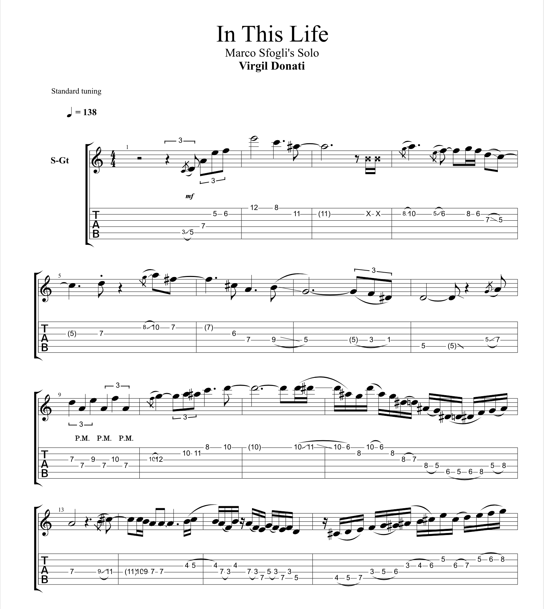
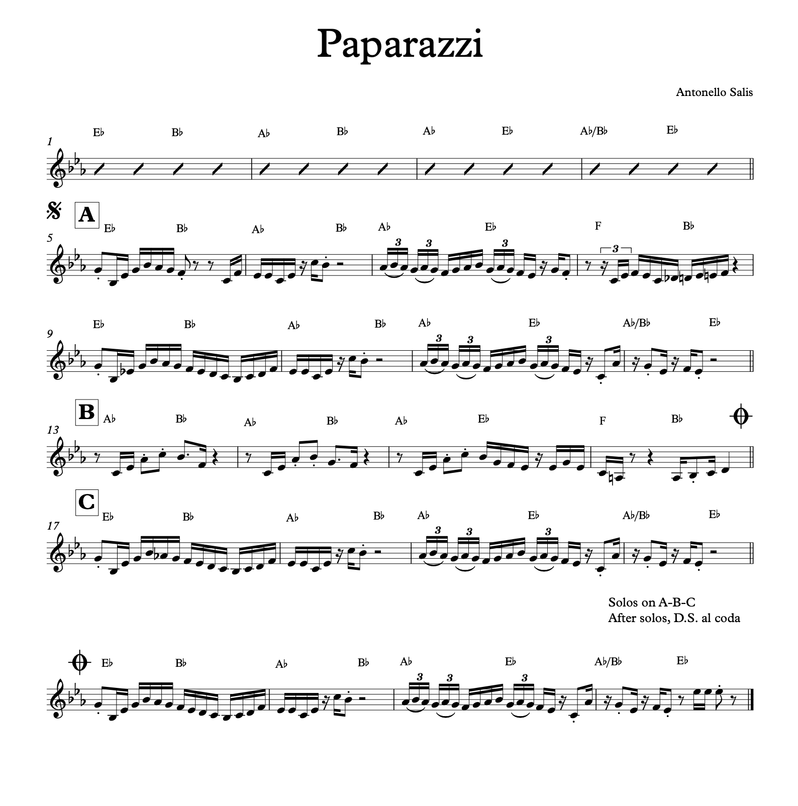
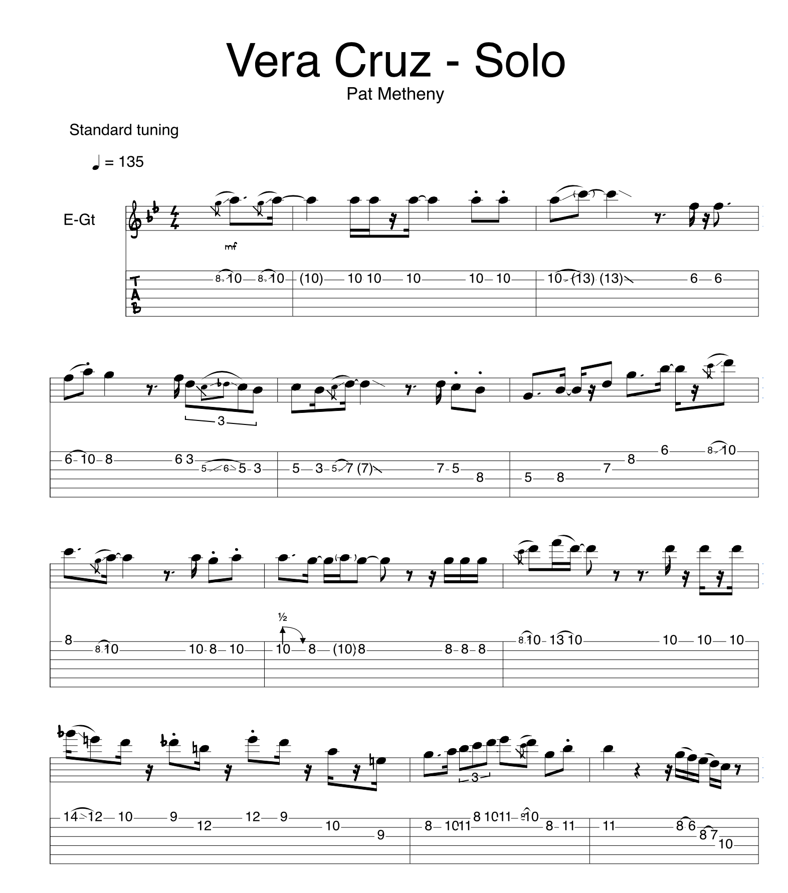

TOMMASO VARVELLO
Guitarist - Music Teacher - Transcriber
Home
Bio
Gear
Transcriptions
Lessons
Videos
Contact
Over the years I've transcribed plenty of music, both for my personal use and on commission. Pricing varies depending on the length of the piece of music. See below for a few sample transcriptions, and get in touch if you need something transcribed!
Click here to download a sample pack of Tommaso's transcriptions!
  
Website design by Tommaso Varvello 2020 ®